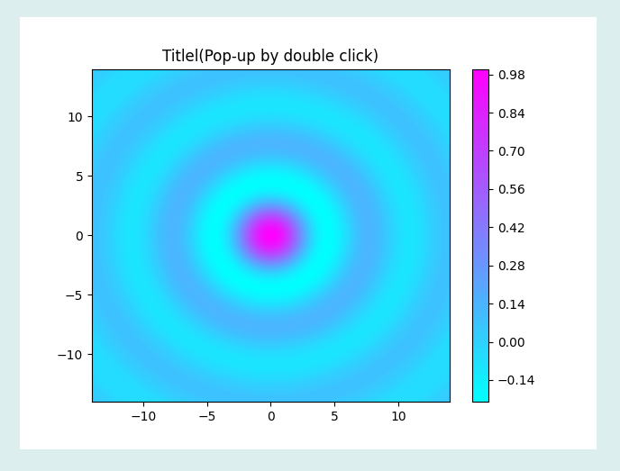
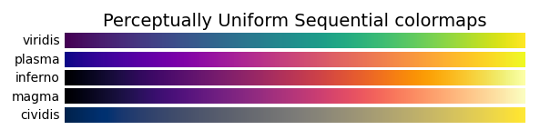
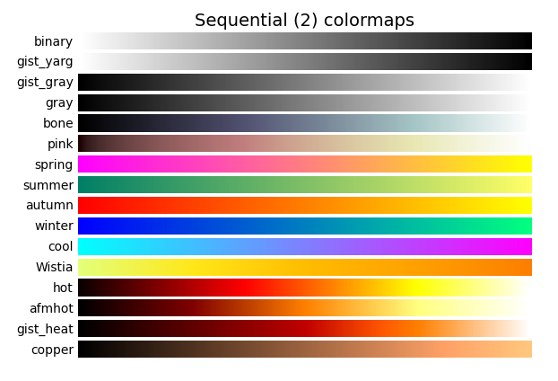

PlotContour三维曲线控件主要用于以伪彩色图形式来显示三维曲线，其图形显示效果如下：

在Python程序GUI界面中创建一个PlotContour三维曲线控件的命令为:
hl=dr.DRPlotContour(win,x,y,w,h,title,xdata,ydata,zdata,scaleBar,colormapname)
下面是常用的伪彩色图(ColorMap)的名称：


其中hl是创建时用户设定的变量名。PlotContour三维曲线控件有1个属性函数。
hl.setValue3D(xdata,ydata,zdata)#以覆盖形式绘制曲线
PlotContour三维曲线控件继承至Tkinter的Frame控件和Matplotlib的plotContour函数，必要时可参阅相关资料。
.